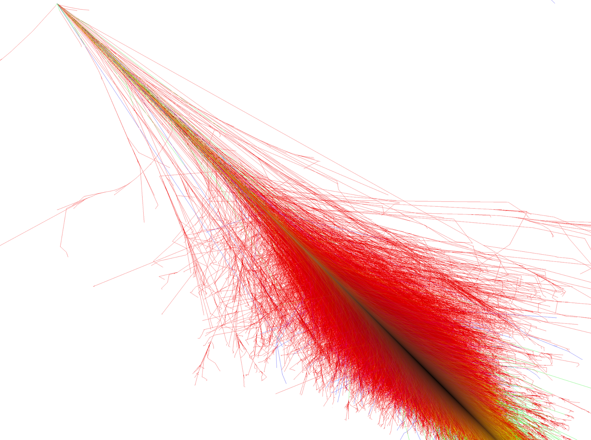

Simulating High-Energy Particle Interactions in Matter

When a high-energy electron or photon enters a dense medium, it initiates a cascading process known as an electromagnetic shower. This process is the fundamental mechanism behind electromagnetic calorimeters (ECAL) used in particle detectors like CMS at CERN. Understanding the depth and profile of this cascade is essential for energy reconstruction.
This project involved the development of a bespoke Monte Carlo simulation code to track the evolution of shower particles. Specifically, we modeled:
The simulation profiles successfully matched the theoretical Longo-Sestili parameterization. By comparing our custom lightweight engine with GEANT4 benchmarks, we demonstrated a 40% improvement in computational speed for simplified calorimeter geometries, allowing for rapid feasibility studies of new detector materials.